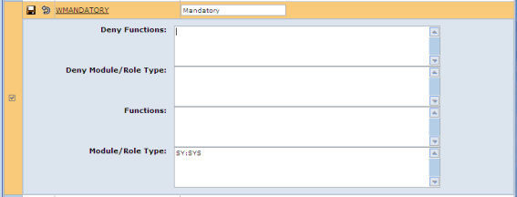

Certain functions are required by all users in order to run
NOTE
Rather than granting access to a predefined list of %W functions that are needed to enable access to these standard features, it is possible to grant this access by setting up a group that has a Role Type entry of SYS, as shown below:

You can either enter *:SYS to give access to all functions with the role type SYS, or specify individual module(s); for example: PL:SYS,SY:SYS.
The list of functions included is defined by
To get a list of all functions with Role Type = SYS, set the advanced filter in Function Maintenance to Module: SY and Role Type: SYS.